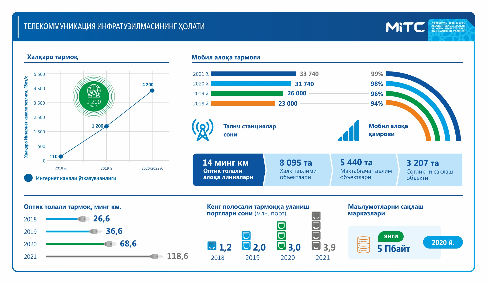
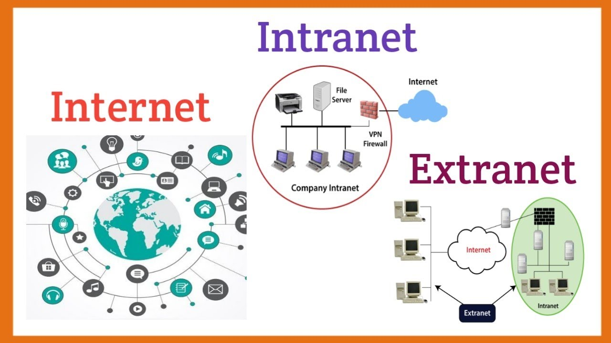

TELEKOMMUNIKATSIYA (tele… va kommunikatsiya) — signal, belgi, matn, tasvir, ovoz va b. turdagi axborotlarni uzatish, qabul qilish va qayta ishlash tizimlari majmui. Simli, radio, optik yoki boshqa elektromagnit tizimlaridan foydalanib amalga oshiriladi. Bir yoki bir necha turdagi, jumladan, telefon, telegraf, faksimil axborotlar va b. hujjatli xabarlarni, kompyuterlararo axborotlar almashinuvi, televizion va radiodasturlarni uzatishga moʻljallangan Telekommunikatsiyalar texnika vositalari toʻplami Telekommunikatsiya tarmogʻi deb ataladi.
Har bir telekommunikatsiya tizimi uchta asosiy elementdan iborat:
Ma'lumotni oladigan va uni signalga o'zgartiradigan transmitter
Signal uzatiladigan uzatish vositasi
Signalni qabul qiladigan va uni kerak bo'lgan ma'lumotga aylantiradigan qabul qilgich
Masalan, radioeshittirishni ko'rib chiqing: bu holda translyatsiya minorasi transmitter, radio qabul qiluvchi va uzatish vositasi bo'sh joydir.
Analog yoki raqamli
Signallar analog yoki raqamli bo'lishi mumkin. Analog signalda signal ma'lumotga nisbatan doimiy ravishda o'zgarib turadi. Raqamli signalda ma'lumotlar diskret qiymatlar to'plami sifatida kodlanadi (masalan, 1s va 0s). Etkazish paytida analog signallarda mavjud bo'lgan ma'lumotlar shovqin bilan buziladi. Aksincha, agar shovqin ma'lum bir chegaradan oshmasa, raqamli signallardagi ma'lumotlar saqlanib qoladi. Bu raqamli signallarning analog signallarga nisbatan asosiy ustunligini anglatadi.
Tarmoqlar
Bir-biri bilan aloqa qiladigan transmitterlar, qabul qiluvchilar yoki transversiyalar to'plami tarmoq deb nomlanadi. Raqamli tarmoqlar ma'lumotlarni to'g'ri foydalanuvchiga yo'naltiradigan bir yoki bir nechta marshrutizatordan iborat bo'lishi mumkin. Analog tarmoq ikki yoki undan ko'p foydalanuvchi o'rtasida aloqa o'rnatadigan bitta yoki bir nechta kalitlardan iborat bo'lishi mumkin. Ikkala tarmoq uchun ham, uzoq masofalarga uzatilganda signalni kuchaytirish yoki qayta yaratish uchun takrorlagich kerak bo'lishi mumkin.
Kanallar
Kanal bu bir necha mustaqil ma'lumot oqimlarini yuborish uchun ishlatilishi mumkin bo'lgan uzatish vositasidagi bo'linishdir. Masalan, radio stantsiya 96 MGts chastotada, boshqa radiostansiya 94,5 MGts chastotasida eshittirishlarni amalga oshirishi mumkin. Bunday holda, vosita chastotaga bo'linadi va har bir kanal uzatish uchun alohida chastotani oldi. Shu bilan bir qatorda har bir kanalga translyatsiya qilinadigan vaqtning takroriy qismini ajratish mumkin.
Modulyatsiya
Ma'lumotni uzatish uchun signalni shakllantirish modulyatsiya deb nomlanadi. Modulyatsiya telekommunikatsiya sohasidagi asosiy tushunchadir va ko'pincha bitta signalning ma'lumotlarini boshqasiga o'tkazish uchun ishlatiladi. Modulyatsiya raqamli xabarni analog to'lqin shakli sifatida ko'rsatish uchun ishlatiladi. Bu klavishlash deb nomlanadi va bir nechta tugmachali texnikalar mavjud - bular faza-smenali klavishlar, chastota-o'tish tugmachalari, amplituda-siljitish tugmachalari va minimal-shift tugmachalari. Masalan, Bluetooth qurilmalar o'rtasida almashish uchun fazali o'tish tugmachasidan foydalanadi.

Internet (lotincha: inter – aro va net – tarmoq) – standart internet protokoli (IP) orqali maʼlumot almashuvchi kompyuter tarmoqlarining butunjahon va omma uchun ochiq toʻplamidir. Bu maʼlumotlarning asosiy tashuvchi protokoli TCP/IP dir. TCP/IP oʻzaro bogʻliq protokollar yigʻindisi boʻlib, internetda maʼlumot tarqalishida asosiy oʻrin egallaydi. Internet tarmogʻini minglab akademik, davlat, tijorat va xonadon tarmoqlari tashkil etadi. Internet elektron pochta, chat hamda oʻzaro bogʻlangan sahifalar va boshqa Butunjahon oʻrgimchak toʻri servislaridan tashkil topadi.
Internet — katta (global) va kichik (lokal) kompyuter tarmoqlarini oʻzaro bogʻlovchi butunjahon kompyuter tizimi. Unda geografik oʻrni, zamon va makondan qatʼiy nazar, ayrim kompyuter va mayda tarmoqlar oʻzaro hamkorlikda global informatsiya infratuzilmasini tashkil etadi. Qaydnomalar tizimi bilan boshqariladigan barcha hosila tarmoqlar hamkorlikda isteʼmolchilarga ma'lumotni saqlash, eʼlon qilish, joʻnatish, qabul qilish, izlash va maʼlum boʻlgan barcha variantlar (matn, tovush, videotasvir, fotosurat, grafika, musiqa tarzida va b. koʻrinishlar) da axborot almashinishga imkon yaratadi.
INTRANET(ing. intranet — ichki tarmoq) — internet texnologiyasi, dastur taʼminoti va qaydnomalari asosida tashkil etilgan maʼlumotlar ombori va elektron jadvallar bilan jamoa boʻlib ishlashga imkon beruvchi korxona va tashkilot miqyosidagi kompyuter tarmogʻi.
Internetdan farqli o'laroq, tashkilotning ichki shaxsiy tarmog'idir. Odatda, Intranet bu IP-protokoli yordamida ushbu tashkilot ichidagi ba'zi ma'lumotlarni almashish va almashish uchun qurilgan miniatyurali Internetdir. Bu xodimlarning ro'yxatlari, sheriklar va mijozlarning telefon ro'yxatlari bo'lishi mumkin. Ko'pincha, bu atama faqat Intranet ichki tashkilot veb-saytining ko'rinadigan qismiga tegishli.
Intranet boshqa kompyuter tarmoqlaridan qo`yidagi bilan farqlanadi. Bir yoki bir necha serverlardan tashkil etilgan tarmoq mijozi undagi elektron hujjat, ma’lumotlar bazasi va fayllardan foydalanish uchun, ularning qaysi serverda qaysi derektoriyada qanday nom bilan saqlanganligini, ularga kirish usul va shartlarini bilishi zarur bo`ladi.
Extranet korporativ ilovasi Internet tarmog'ida ishlaydigan yopiq korporativ portal bo'lib, u yopiq korporativ materiallarni joylashtiradi va vakolatli foydalanuvchilarga kompaniyaning avtomatlashtirilgan boshqaruv tizimiga kirishni, shuningdek kompaniyaning sheriklari va doimiy mijozlariga bir qator materiallardan foydalanish imkoniyatini beradi. shuningdek, shaxsiy elektron pochta.
Agar ekstranet deb tasniflangan tarmoqlar haqida gapiradigan bo'lsak, dastlab ichki tarmoqlarni tashkil qilishni tushunishimiz kerak, bu odatda intranet deb ataladi.
Farq nima? Intranet mahalliy tarmoqlar turlaridan biri sifatida faqatgina kompaniyaning yoki korxona xodimlarining ichki oqibatlarga olib keladigan oqibatlarga olib kelishi mumkin bo'lgan tarmoq yoki portal hisoblanadi. Tashqi foydalanuvchilar bunday yopiq resursga yoki hatto umumiy foydalanishdagi hujjatlarga kirish imkoniga ega emas.
O'z navbatida, extranet cheklangan kirish tarmog'i yoki manba hisoblanadi. Biroq, bu kabi huquqlar tegishli huquqlarga ega bo'lgan holda, kompaniya xodimlariga ham, tashqi foydalanuvchilarga ham ruxsat etiladi.
Intranet boshqa kompyuter tarmoqlaridan qo`yidagi bilan farqlanadi. Bir yoki bir necha serverlardan tashkil etilgan tarmoq mijozi undagi elektron hujjat, ma’lumotlar bazasi va fayllardan foydalanish uchun, ularning qaysi serverda qaysi derektoriyada qanday nom bilan saqlanganligini, ularga kirish usul va shartlarini bilishi zarur bo`ladi.

Bu yerda Internet va Intranet, Extranet farqi haqida qo'shimcha ma'lumot keltirilgan